Feature — The Man Who Reached the Top
in Another's Name
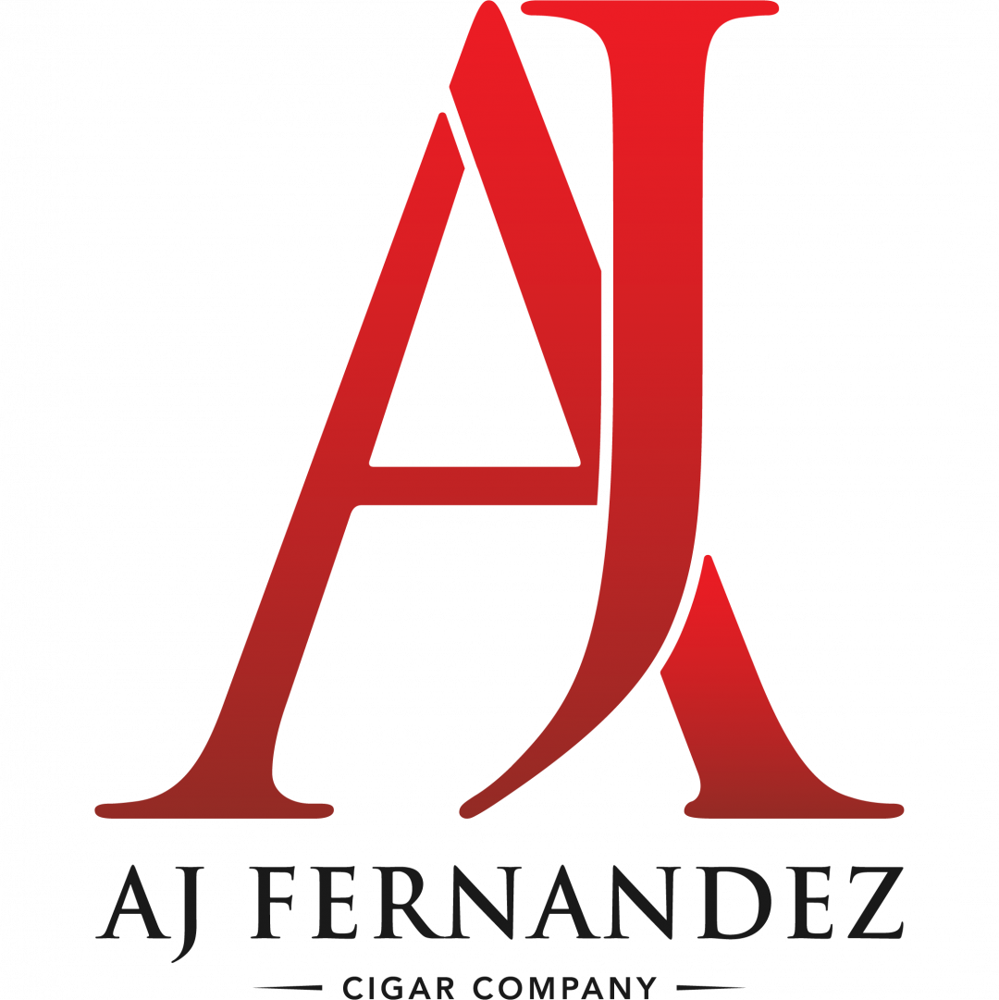
This man's finest masterpieces do not line the shelves of his own shop. On the cigar that took Cigar Aficionado's No. 1 spot of the year (2019, 96 points), and on the cigar that shone in second place with 97 points, the name on the front is someone else's — Montecristo, Aging Room, Ramón Allones. And yet the industry calls him a “blending genius,” and when a storied Cuban brand needs to be revived, the job comes to him first. A contract blender was supposed to be someone who never steps into the spotlight. And yet his name is engraved in gold letters right in the middle of other people's brands.

His full name is Abdel Joseph Fernandez. Born in 1979 in San Luis, the sacred heartland of Cuban tobacco, he went to Nicaragua at the age of 24 and built himself up from three rolling tables in his own home. In just over 20 years, he became the master of an “empire” in Estelí, with one of the largest factories in Central America and more than 600 acres of farmland, and he has been selected an industry magazine's “Person of the Year” a record three times. And yet his self-introduction is a single phrase: “I am a guajiro (a country man)” — A man called a genius, and a man who calls himself a country man. In this deep dive, we will pursue what lies behind that gap.
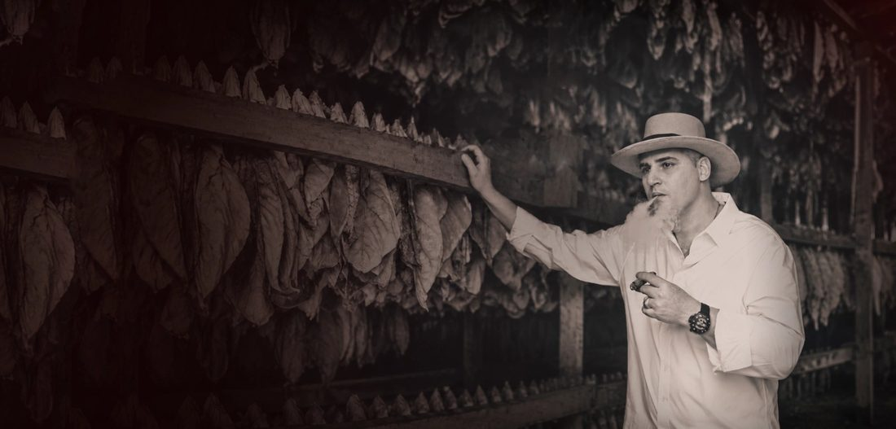
We do not intend to assert the word “genius” ourselves. First, we will simply set out, just as they are, the words and the record that the industry has directed his way.
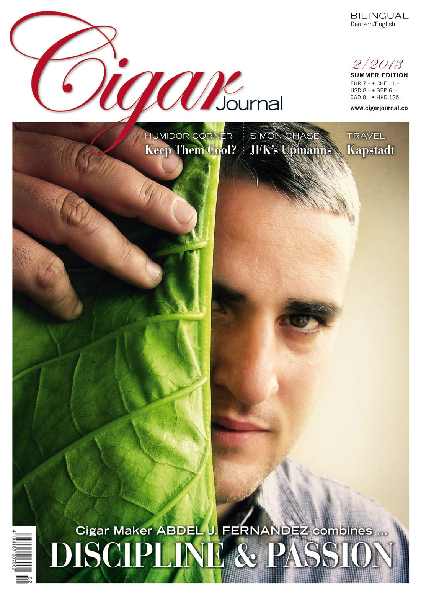
Words, however, are only words. Whether there is substance behind them is something we will confirm through his own journey and an examination of his craft.
◆ Chapter 1 — The Boy from San Luis: Born in Tobacco's Holy Land
San Luis, in Pinar del Río Province. This town, in western Cuba, in one corner of the Vuelta Abajo, said to produce the world's finest wrapper leaf, is the "holy land of tobacco" that gave birth to legendary growers, beginning with Don Alejandro Robaina. AJ Fernandez was born there in a rural district in March 1979, the third generation of a family of tobacco farmers and cigar makers.
His grandfather Andrés was making a small brand for the local market in pre-Castro Cuba. Its name was "San Lutano" — the very word for someone who comes from San Luis. The young AJ's memories are of helping to remove the stems from his grandfather's leaves (de-ribbing). "In my universe, nothing existed besides tobacco. My father, my grandfather and my uncles all worked in tobacco. It was like being put in a cradle. It is in my blood," he told Cigar Journal.
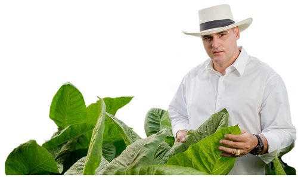
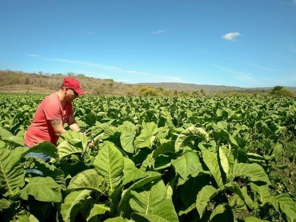
His father, Ismael, was a technician in charge of tobacco in the Cuban government's agricultural sector. At the age of 13, AJ began going after school to a farm called Finca La China. The early teacher who taught him cultivation, harvesting and sorting there was a man named Ricardo Ledesma. The farm is said to have been a trial cultivation site, before government approval, for "Habana '92," which would later become one of Cuba's main varieties. "I had no interest in anything other than tobacco," he himself recalls (Cigar Aficionado).
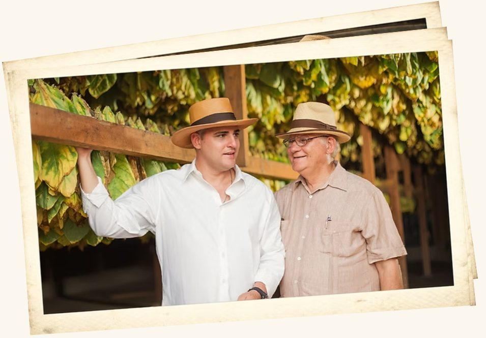
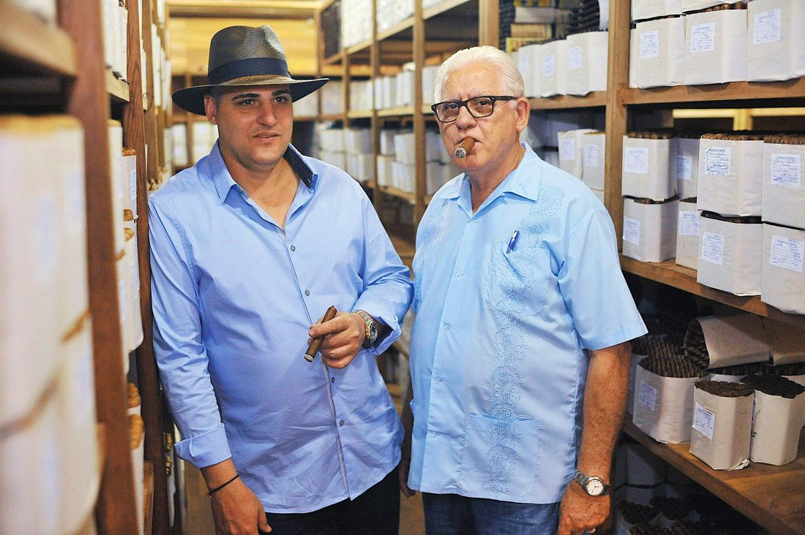
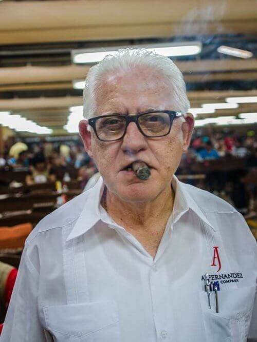
AJ Fernandez has a legend attached to him: that he was "a disciple of Alejandro Robaina, the god of Cuban cigars." This is the verification, on the original side, of the story that Part 4 (the My Father feature) sorted out as "he was not Pepín's disciple." First, the side for which there is corroboration. In a statement issued at the launch of San Lotano in 2010, AJ Fernandez himself publicly described Robaina as "my mentor and friend." Cigar Journal (2013) also stated clearly that "he worked under Alejandro Robaina and was taught the secrets of tobacco." Robaina's farm was in the same San Luis, so geographically, too, an encounter was natural.
On the other hand, there is also a "silence" that calls for caution. Cigar Aficionado's definitive profile, "Moving Mountains" (2016), does not mention Robaina at all. The only teacher from his boyhood whom the article names is Ricardo Ledesma. And when AJ Fernandez himself was asked who his most important teacher was, he answered: "My father." In other words, it can be written as fact up to this point: "In his youth in San Luis he received teaching from Robaina, and he himself publicly called him, throughout his life, his 'mentor and friend.'" But the specific picture of his having "formally become a disciple and served him for a long time" is unconfirmed in primary sources. What spread the strong expression "disciple (protégé / treasured pupil)" was the product copy put out by American mail-order and club businesses. Some copy goes so far as to write that he "learned under his mentor for most of his life" and "absorbed his knowledge for decades," but AJ Fernandez left Cuba at the age of 24, so it does not fit the chronology. The legend grew, little by little, inside the copy. His teacher was his father. And he was a man who also learned from the legend of his hometown — that is the picture closest to the sources.
So what kind of person was this Robaina? After the revolution, in a Cuba where the collectivization of farms into cooperatives was advancing, he was one of the few independent growers who did not give up their land. In 2006, he himself recalled, in an interview with Cigar Aficionado: "I told Fidel. I do not like cooperatives or state farms; for growing tobacco, family production is the best. He wanted me to join a cooperative, but I refused." In 1997, as the only living grower in history to do so, a brand bearing his own name, "Vegas Robaina," was released by Habanos, and his smiling face, etched with deep wrinkles, was used on the box just as it was. He died in April 2010, at the age of 91. AP reported that the coffin at his funeral was decorated with "a half-smoked cigar bearing his name, and yellow tobacco flowers." It was the last cigar of a man who smoked his first cigar at the age of 10 and kept smoking for 81 years. — And, as an aside, one story at the level of rumor. It is sometimes said that at his farm, as much as 80 percent of the harvest grew to wrapper grade. At an ordinary farm the figure is said to be 10 to 15 percent, so this is out of all proportion, but the source of this "80 percent" is at the level of a claim by video media, and it has not been corroborated. We leave it here only as a yardstick for measuring the size of the legend.
◆ Chapter 2 — Moving Mountains: From a Three-Table Workshop to an Empire
It was his father, Ismael, who left Cuba first. In 1995, his father crossed to Nicaragua and began working for his cousin Néstor Plasencia — one of the world's largest makers of leaf. AJ followed in 2003, at the age of 24. He left the country ostensibly for a “family visit” and never returned.
After living with his father and working for a grower who sold leaf to the Plasencia family, he opened a workshop in his own home with three rolling tables. His own words have survived: “With three tables, we rolled 20,000 cigars a month for Néstor.” In time, he met his first major client, Rocky Patel, and that large order became the trigger for his leap forward (see Chapter 4 for details). In 2005, he established his first full-scale factory, “Tabacalera Fernandez.” By 2006, annual production had reached four million cigars.
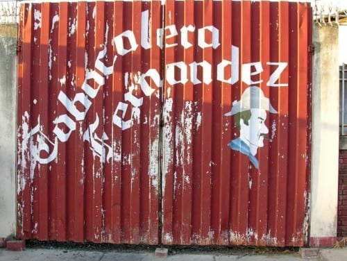
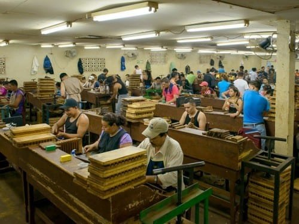
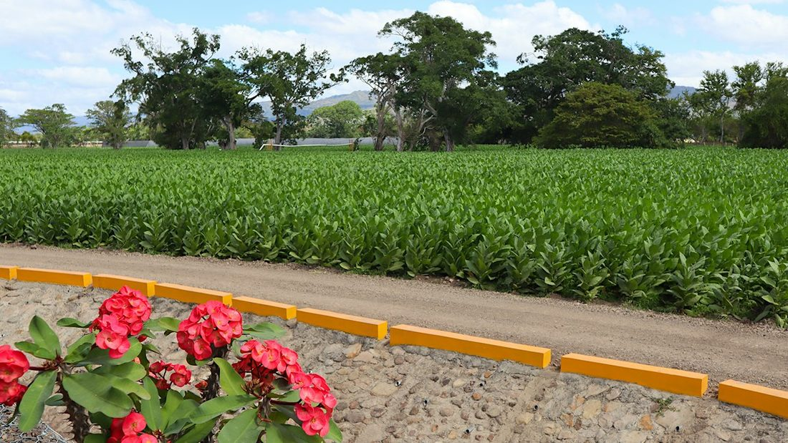
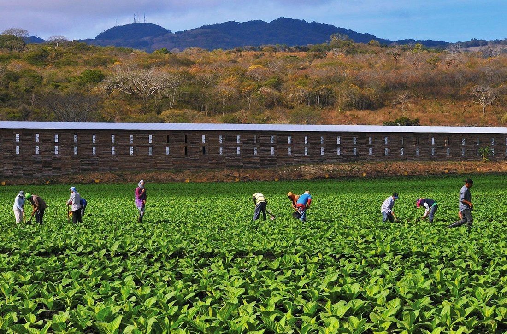
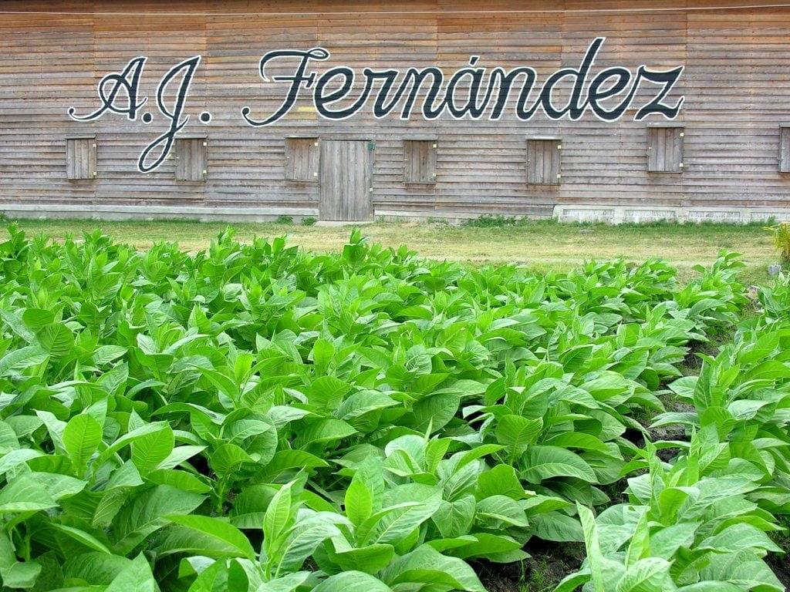
That same year, he bought 28 acres of virgin land on a mountainside in Estelí and affectionately named it “San Lotano.” It was the name of his grandfather's brand. “I like sloped land. Because the nutrients flow downward” — and from the sight of him literally excavating mountainsides and leveling them into farmland, Cigar Aficionado titled its profile “Moving Mountains.”
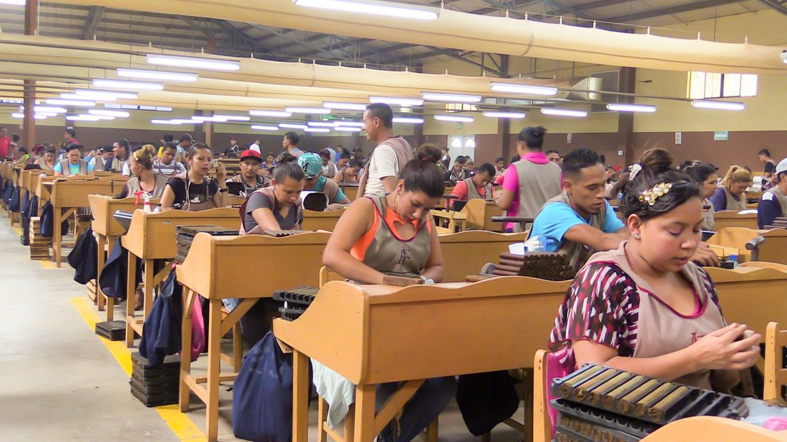
The turning point was his relationship with Cigars International, the major American mail-order company. Diesel and Man O' War, made for that company, became perennial bestsellers in its catalog, and AJ's factory grew into the company's largest source of supply (for a detailed account of this period, see Chapter 4). Then, in 2010, he finally raised his own banner: the launch of “San Lotano,” his own label reviving his grandfather's brand. It was the moment when a man who made cigars for others came to have a cigar of his own name (for details, see Chapter 5).
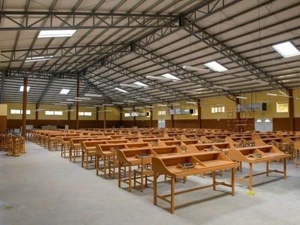
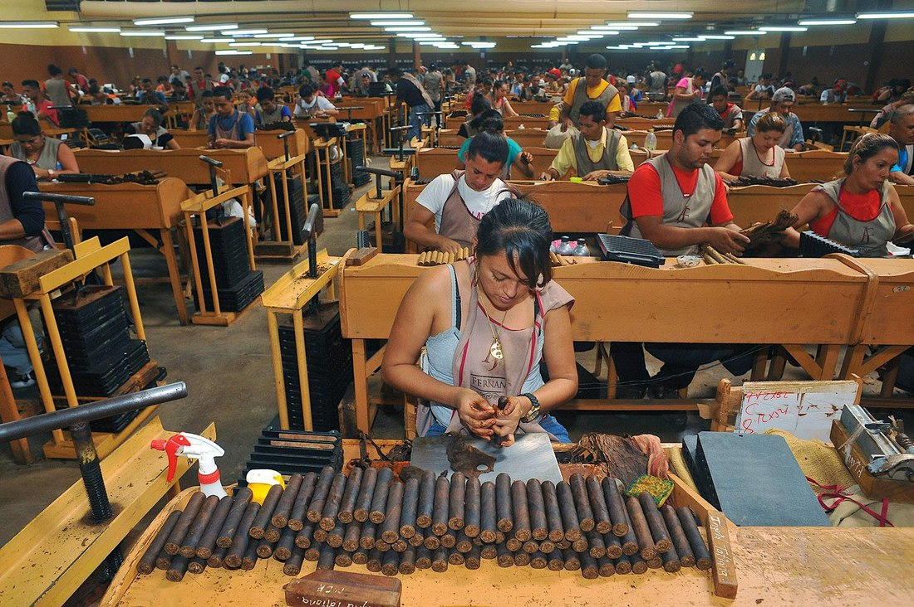
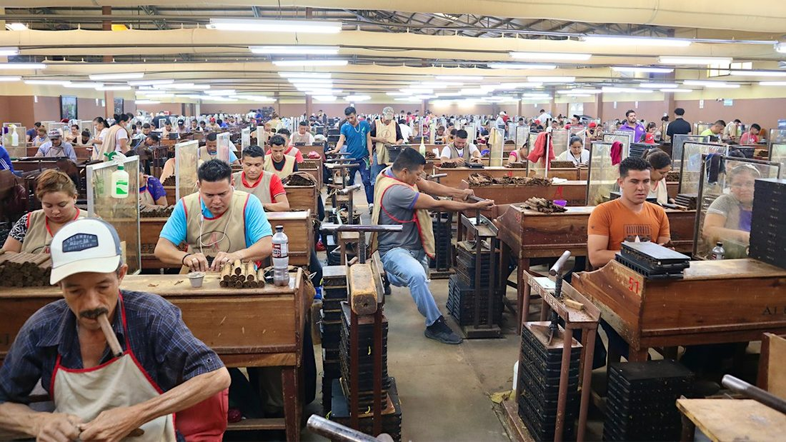
Let us set down the figures for the scale, with dates. According to Cigar Journal's on-the-ground reporting (2013), the new factory measured 12,000 square meters, had a projected production of 15 million cigars a year and 1,300 employees, and 85% of its production was for other companies' labels. According to Cigar Aficionado (2016–17), the main factory's production was 14 million handmade premium cigars a year, its farmland exceeded 600 acres across Nicaragua (360 acres in Estelí alone), and its growing regions extended to Estelí, Condega, Jalapa, Pueblo Nuevo, Quilalí, and Isla de Ometepe. In 2017, he opened a second factory, “San Lotano,” in Ocotal (about 40 miles north of Estelí). It was how far he had come, in just over ten years, from a three-table workshop.
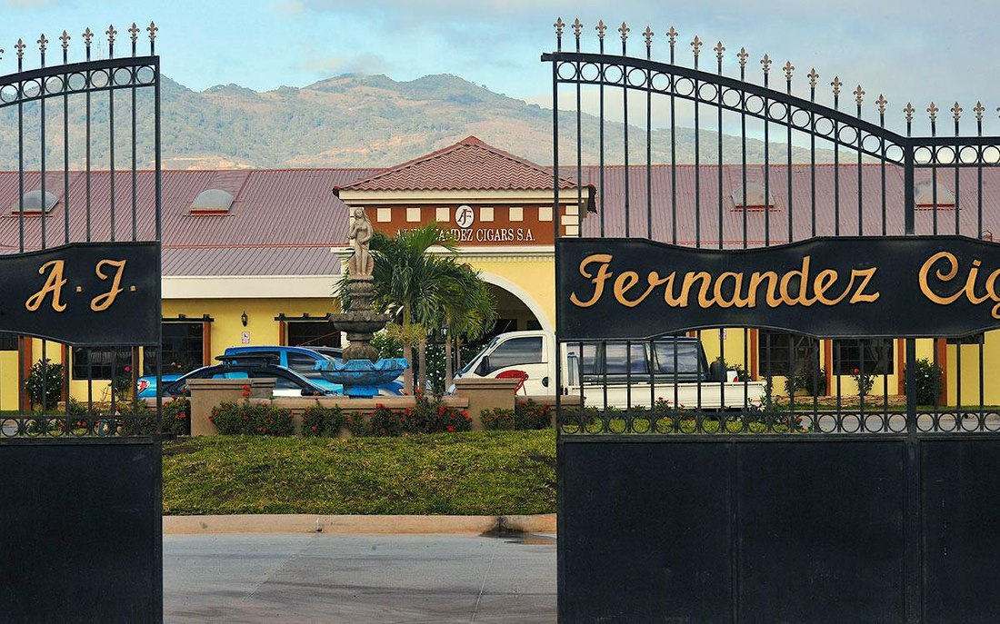
His grandfather's brand name was originally “San Lutano” (a person from San Luis), spelled with a “u.” But when AJ registered the trademark, a clerical mix-up turned the “u” into an “o.” He laughed, it is said, and decided to use it just as it was (Cigar Aficionado). The name of the farm, the name of the revived brand, and, for that matter, the name of the second factory in Ocotal are all now “San Lotano.” The family banner has marched on together with a government office's typo.
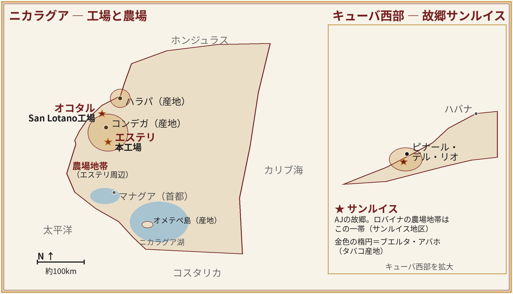
◆ Chapter 3 — Putting the Craft to the Test: What 'Good' Is Actually Made Of
Praise is just words. Here, we step back a pace and examine what his craft actually consists of. What are the "hard problems" he is solving, and how does he solve them? The material is limited strictly to facts with sources.
Hard problem number one: reproducing a flavor free of ammonia, at production scale. His fermentation is a process measured in years: the tobacco is fermented for one year in bundles (pilones) with the stems still on, aged for two years in bales with the stems still on, then, with the stems removed, rested lightly for three months, and then rested a further nine months in bales. The aim is a single one: "that no ammonia appears in the flavor." A Cigar Aficionado reporter entered his aging room and confirmed with his own nose that there was no smell of ammonia. Moreover, this process is applied even to the mass-produced products of a factory on the scale of 14 million cigars a year. And he discloses this method in full to the reporting team. His reason for not keeping it a closely guarded secret is his confidence that "no one will imitate a process this long."
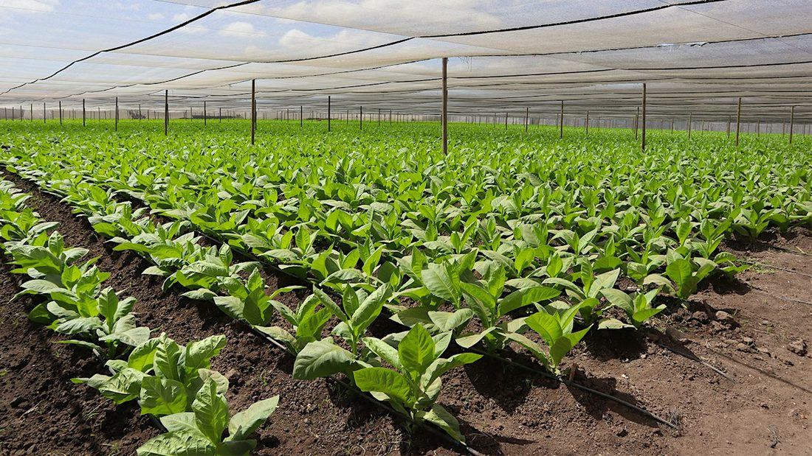
Hard problem number two: turning leaf that everyone shuns into a product. Pelo de Oro is an old Cuban seed variety, susceptible to disease and disliked by many growers. He deliberately grew it on a trial basis and became one of the few makers able to turn it into a product. When he heard that a German luxury bag maker had adopted cigars made with this leaf for its own use and planned to sell them at $500 apiece, he reportedly just laughed. "He is free to sell them for whatever he likes. It doesn't bother me" — CA relates this anecdote as a manifestation of his confidence in the leaf.
Hard problem number three: guaranteeing consistency through systems. His empire holds "from seed to ash" in its own hands. Its own farms cover six growing regions and more than 600 acres. Even contract work uses leaf from its own farms, and the major retailer Holt's wrote that "AJ grows all of Montecristo's filler leaf across his vast farm network." What the clients are buying is not just the blender's individual palate, but the leaf inventory and the farms themselves.
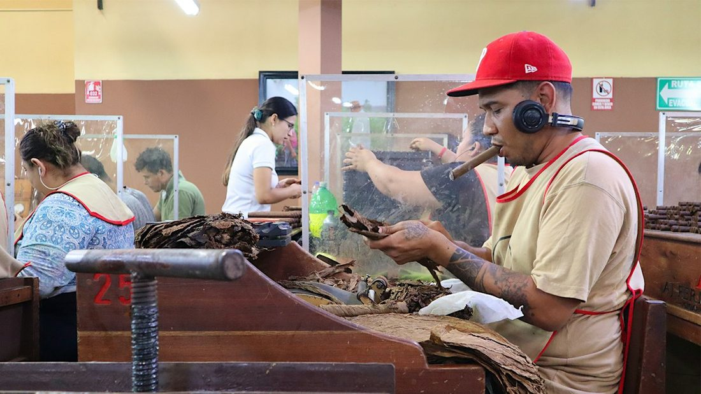
And then, the self-management of his palate. For quality control, he is said to smoke, every day, one cigar from each of his company's lines, and in every size. Cigar Journal's chapter heading "The Man with the Perfect Palate" was presented together with this habit. Testimony from a subordinate also remains. "His cigars are like children to him" (Clay Roberts, head of marketing). The principle he himself states publicly is truly that of a craftsman. "I will not accept an order that tells me to use young tobacco. That is one of my principles."
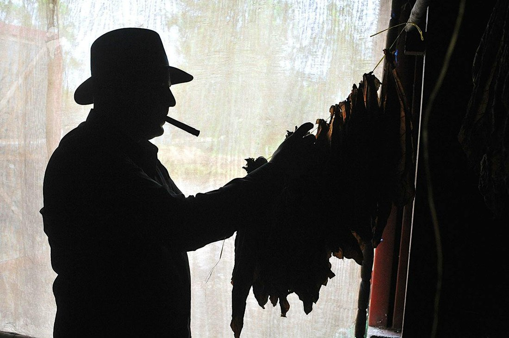
Let us also read this through the record. In Cigar Aficionado's Top 25, cigars involving AJ never disappear from 2012 to 2024, over a span of 12 years. Looking at the distribution, there are two faces. His house lines cluster between 91 and 94 points, the highest being 94 points for New World Dorado. By contrast, his contract and collaboration work is distributed between 92 and 97 points, with one No. 1 of the Year and two No. 2 rankings. The breadth of styles also shows in the numbers. While he answered the unreasonable order to make "the most full-bodied Punch in history" (Punch Diablo), Enclave, by the hand of his father Ismael, entered the Top 25 with a delicate blend using a Cameroon binder. It is not all about strength alone. That breadth, and the persistence lasting 12 years, are, I believe, his "signature" as it can be read from the critical record. I will not invent impressions of flavor here. Incidentally, CA's comments on Montecristo 1935 will be introduced in the passage on that brand in Chapter 4.
| Category | Brand & Vitola | Score | Year & Rank |
|---|---|---|---|
| House line | San Lotano Oval Corona | 91 pts | 2012 · No. 25 |
| House line | Enclave Churchill | 92 pts | 2016 · No. 20 |
| House line | New World Puro Especial Toro | 93 pts | 2017 · No. 12 |
| House line | Enclave Broadleaf Churchill | 92 pts | 2019 · No. 19 |
| House line | New World Dorado Robusto | 94 pts | 2022 · No. 14 |
| Contract / collab. | Montecristo Nicaragua Robusto(Altadis) | 93 pts | 2018 · No. 10 |
| Contract / collab. | Ramón Allones by AJ Fernandez Churchill(General) | 92 pts | 2018 · No. 25 |
| Contract / collab. | Aging Room Quattro Nicaragua Maestro(Nodal) | 96 pts | 2019 · No. 1 of the Year |
| Contract / collab. | Montecristo 1935 Anniversary Nicaragua No.2(Altadis) | 95 pts | 2021 · No. 2 |
| Contract / collab. | Montecristo 1935 Anniversary Nicaragua Espeso(Altadis) | 97 pts | 2024 · No. 2 |
Everyone, have you noticed something odd? The top three in this table — 96 points, 97 points, 95 points — are all "someone else's signboard." Why are the genius's greatest works not lined up on his own shelf? In the next chapter, we go inside that empire.
Chapter 4 — Other Men's Names
Why Does Everyone Come to Him?
In Chapter 2, we followed his journey. Here, let us turn the perspective around and look from the side placing the orders. His “first commission” was not a single one. To tell it accurately, it came in three stages.
The first stage was a family connection. As touched on in Chapter 2, the young AJ, just starting out, rolled cigars at his rolling table at home for his father's cousin Néstor Plasencia. What we should look at here is how that work was structured. The Plasencia family, as a “family obligation,” passed leaf to the unknown young man and bought up the finished products. It was not financially rewarding work, but it became a place for him to train in rolling, and in time his tables grew to fifteen.
The second stage: his first large outside client was Rocky Patel. He was entrusted with manufacturing the Fusion, the Signature Series, and the seasonal Winter Collection and Summer Collection — 20,000 to 60,000 cigars a month. “A year and a half later, in 2005, I opened my first full-scale factory, ‘Tabacalera Fernandez’” — Cigar Aficionado reports, in his own words, that Patel's large order was itself the trigger for the leap from a tiny workshop to a factory. As for how the two met, there is no reliable source. We will not fabricate a story here of “a big name discovering a young genius.”
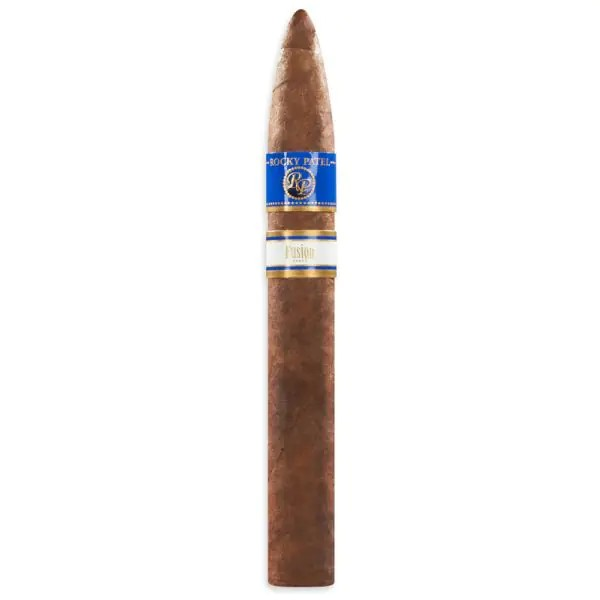
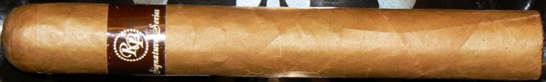
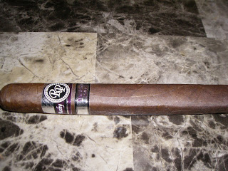
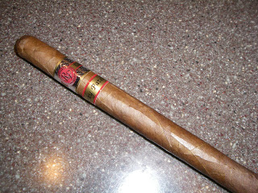
The third stage was work that sold a name. The Man O' War and Diesel, released in 2009 for the mail-order giant Cigars International, became staple bestsellers of the catalogue, and cigar historian Richard B. Perelman described Man O' War as having “near cult status.” AJ also blended and manufactured the Ave Maria (2010) for Meier & Dutch, part of the CI group. Cigar Journal, speaking collectively of work from the same period, also lists lines for Gurkha and Padilla as his creations (the individual line names have not been identified). At the time of CA's profile (2016–17), about 60 percent of the main factory's production was for CI. “CI's catalogue customers may not know AJ's name, but they know his cigars.” The sheer volume of contract work was the foundation of his business.
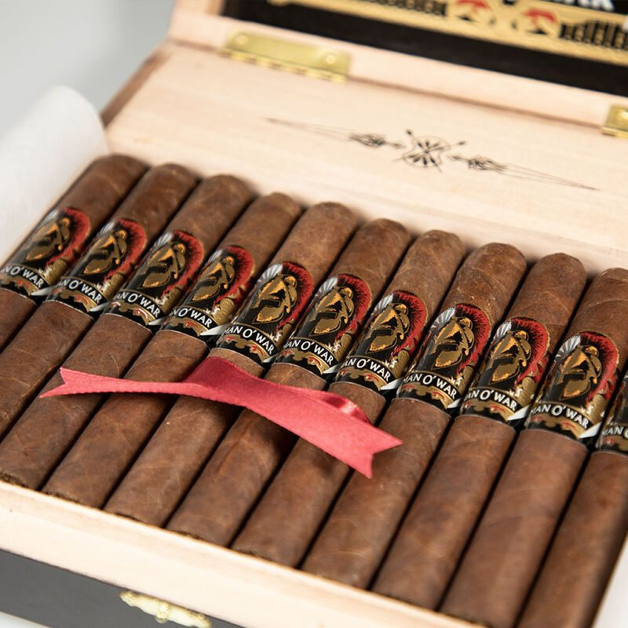
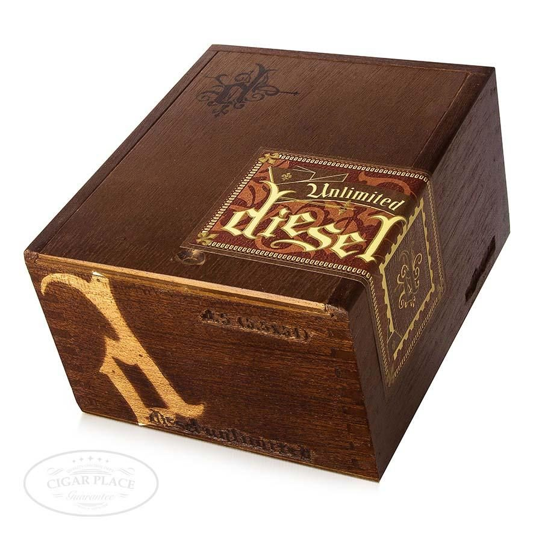
“Didn't he also make a cigar for a whiskey company?” — some readers may remember something of the sort. It does exist. It is the Diesel Whiskey Row, a collaboration between General Cigar's Diesel and Rabbit Hole Bourbon, a bourbon maker in Louisville, Kentucky. In 2016, bourbon barrels from Rabbit Hole were delivered to the factory in Estelí, and AJ aged a Mexican San Andrés binder inside those barrels. It was a first attempt for both Diesel and AJ, and the product was released in June 2018 (Cigar Journal, May 23, 2018). Inside is Nicaraguan leaf from Ometepe, Condega and Jalapa, and the wrapper is a five-year-aged Ecuadorian Habano. Even among the “other men's names,” this is a cigar with an especially cross-industry aroma.
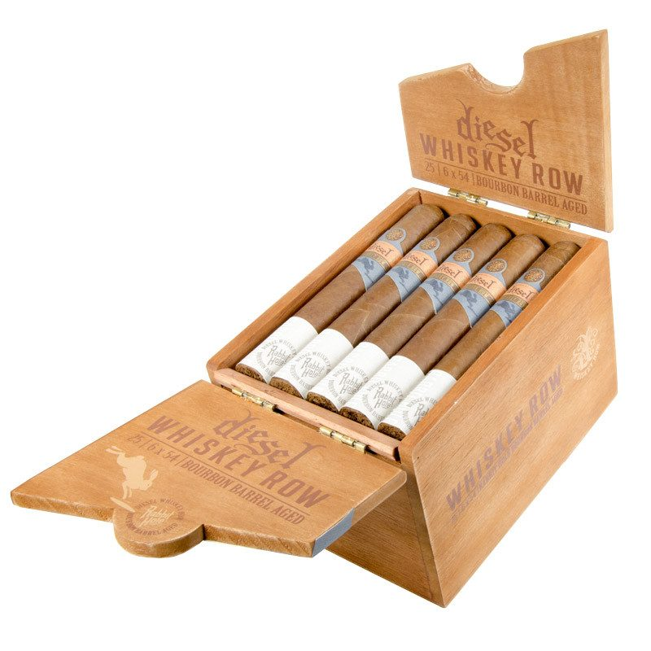
A number of tales about attribution from this era's work have survived. All of them are unconfirmed, and we introduce them here quarantined as stories from the “rumor” shelf. First, about Man O' War: it is sometimes said that “AJ himself considers this his finest blend among all the works from his own factory.” The source of this story, however, is sales copy from the CI group, and it remains unconfirmed as a primary statement from the man himself. Next, the 5 Vegas brand, also from the CI group. On enthusiast forums and the like it is said that “the AAA line is AJ's work,” but this too is unconfirmed, and treating the brand as a whole as AJ's creation is an error (for the recent Nicaragua line alone, CI itself explicitly names AJ as the maker). Furthermore, in the relationship chart of the industry database Cigar Nexus, manufacturing for La Palina and Rojas also appears by name only, but the specific cigars and sources are unconfirmed. As for the tale that an “AJ version” of Cuba's prestigious Bolívar existed, its very existence has not been confirmed. In the shadowy parts of the empire, there is work of this kind — “talked about, but impossible to verify.” That, too, is part of the landscape of the contract era.
So why did each of these companies turn to him? The most concrete answer, in the words of the clients themselves, is “leaf.” Erik Espinosa explained, in an interview with CA, why he moved production of his own flagship line, 601, to AJ’s San Lotano factory (in Ocotal): “AJ gets his hands on the finest wrappers known to mankind. I had been buying wrappers from him, and he told me, ‘If you want good quality, let me make them for you.’ So I said OK.” Jack Toraño, an executive at the same company, put it just as bluntly: “No one in this industry has access to leaf the way AJ does. We partnered with AJ because we wanted that leaf. That is why we handed the 601 line over to him.” Nicholas Melillo of Foundation also draws on AJ’s supply of Connecticut Broadleaf, and makes use of leaf from the La Soledad farm, for his flagship line, The Tabernacle. For a small brand, AJ is, quite simply, “a factory plus a library of leaf.”
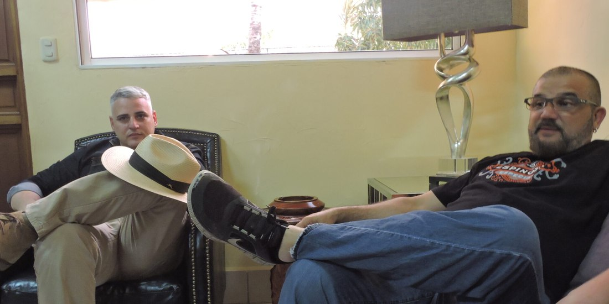
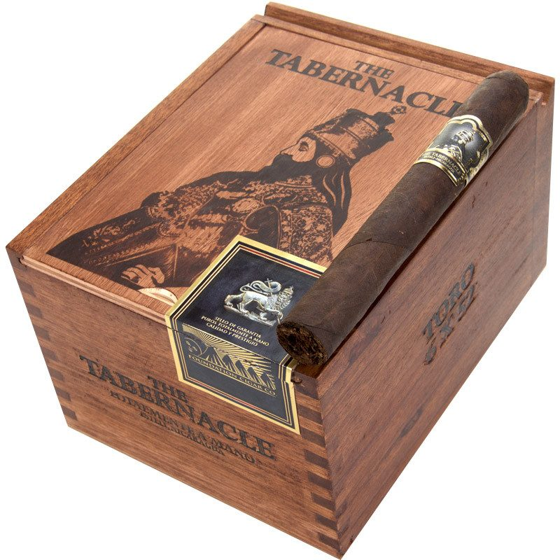
Those 601 and Murciélago lines were originally made at the factory of the García family — the subject of the Part 4 My Father feature — and later moved to Espinosa’s own La Zona factory. At the end of 2016, because of growing demand and leaf procurement, production moved to AJ’s Ocotal factory. Murciélago was relaunched in 2017, its blend reworked by AJ’s own hand. The work of the subject of Part 4 had, by a winding path, come to the factory of the subject of Part 5. The two features in this deep-dive series quietly cross paths between the factories of Estelí and Ocotal.
The other reason is “consistency.” Robert Holt of the small Texas brand Southern Draw searched far and wide for a manufacturing partner before finally entrusting AJ with the manufacture of all his lines in 2013. “In 2013–14, AJ Fernandez was not yet a name everyone knew. But as we explored the relationship, everything fell into place. By being consistent in his own processes, AJ, together with his family and staff, became a steady hand, and he contributed to our early success more than he is given credit for” (Tobacco Business). And Cigar Journal describes how it spread: “Word that there was a young, talented Cuban exile in Estelí making cigars quickly spread through the industry. Orders poured in.” Word of mouth set off a chain of orders, and a proven track record brought in commissions from the major players. That is how the empire’s system for taking orders came into being.
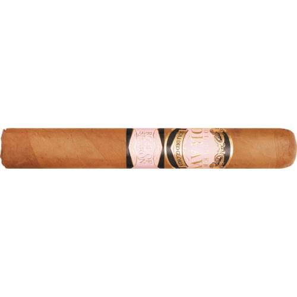
That trust reached the great, prestigious brands. Hoyo La Amistad (2016, General) opened the door. “La Amistad — friendship.” AJ himself says: “I grew up right near the farms of Hoyo de Monterrey, and I have always loved this brand. This cigar represents the best part of me and of my factory.”
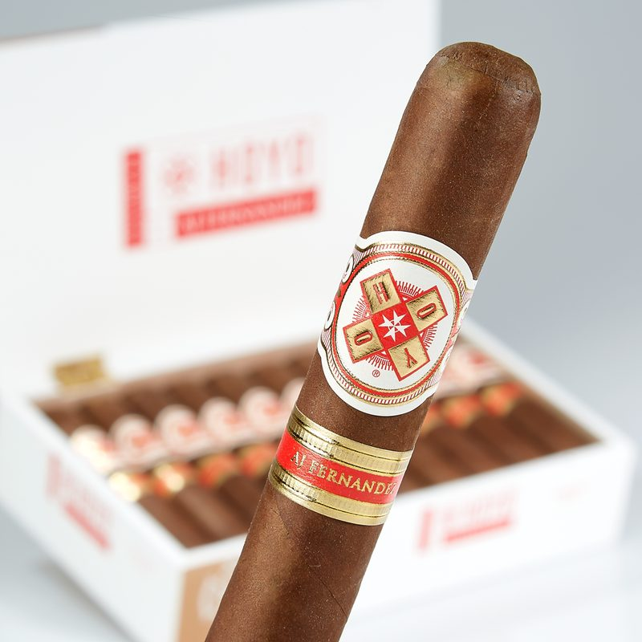
H. Upmann by AJ Fernandez (2017, Altadis) became the first Nicaraguan-made H. Upmann in history and scored 92 points in CA. It was a turning point, when the signboard of a prestigious Cuban brand was rolled on Nicaraguan soil for the first time. The following year, in 2018, the Churchill of Ramón Allones by AJ Fernandez (General) scored 92 points in CA and placed No. 25 in the Top 25. That same year, with Punch Diablo, a Punch was made for the first time outside General’s own factory (in Honduras).
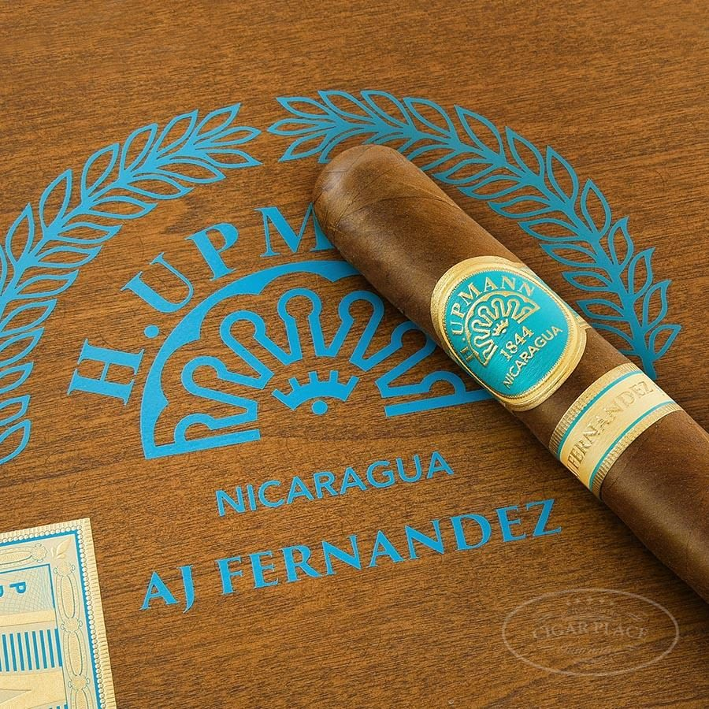
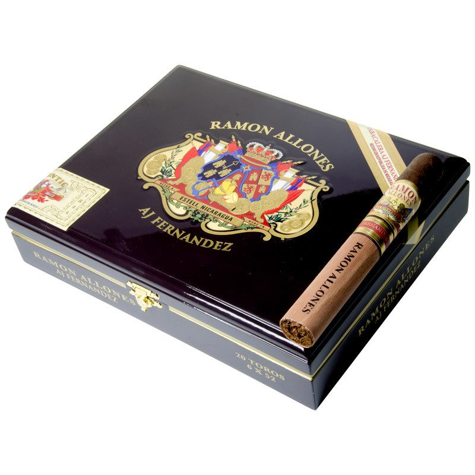
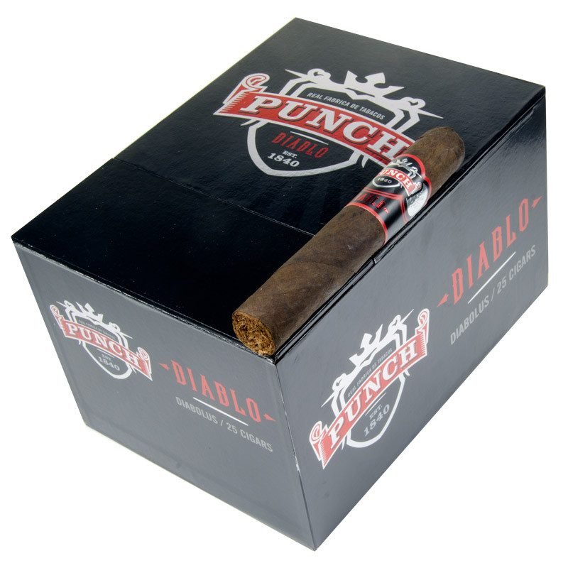
The structure of Ramón Allones is decisively different from the other commissioned works. The trademark is retained by General. But General did not stop at making AJ its “exclusive manufacturer”; it appointed him even as its exclusive distributor in the United States. In an ordinary commission, distribution is the client’s job. Yet with this brand alone, AJ both makes it and sells it. From “a subcontractor who only makes” to “the side entrusted with the brand” — this is the brand that marked the turning point at which his position changed phase. Incidentally, he boldly inscribed his own name, jointly, on the boxes of this brand’s cigars. “by AJ Fernandez.”
And at the top of the staircase was Aging Room Quattro Nicaragua (released in 2018, Rafael Nodal). The owner was Nodal; the leaf and the manufacturing were AJ’s. It scored 96 points in CA and was No. 1 of the year in 2019. Nodal has revealed that “together with AJ, I explored leaf that is rarely used on a large scale, such as leaf aged for more than ten years and small lots given a special fermentation.” What the client was buying was not only his blending skill, but the very stock of aged leaf that is rarely obtainable.
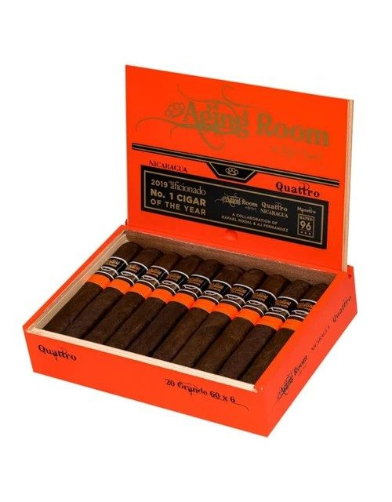
That the summit was no accident was proved by the next signboard. Montecristo 1935 Anniversary Nicaragua (released in 2020, Altadis) was jointly conceived by Nodal and AJ, and it was manufactured not at the main factory in Estelí but at the San Lotano factory (Ocotal). The No.2 shone at No. 2 in 2021 with 95 points in CA, and CA judged it “the best non-Cuban Montecristo we have ever tasted.” Furthermore, the Espeso placed No. 2 in 2024 with 97 points. To take the very top repeatedly under the same signboard — that reproducibility pushed his reputation from the side of “a skilled craftsman” toward that of “a maestro.”
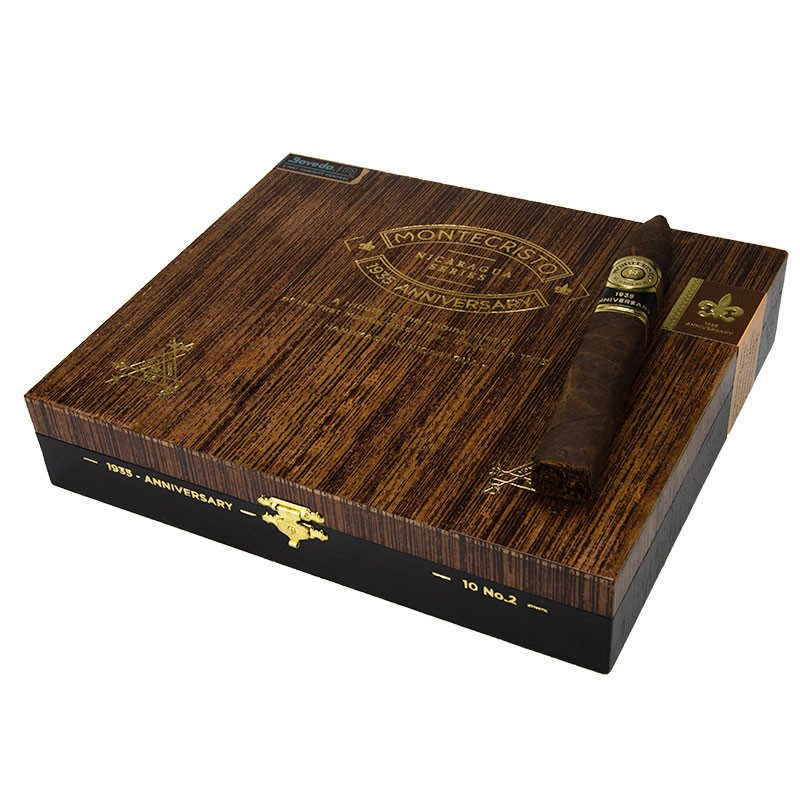
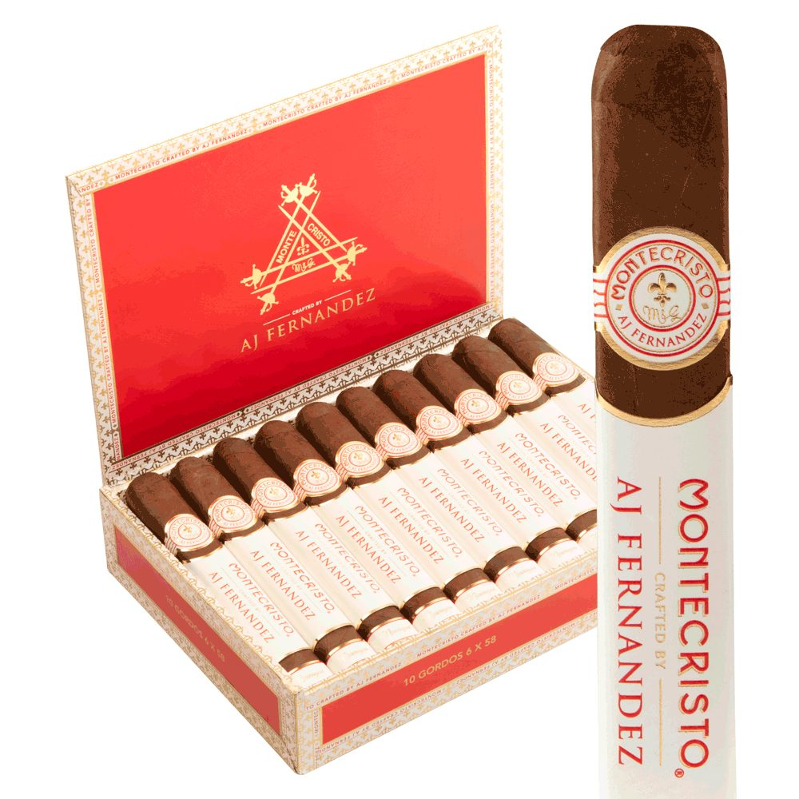
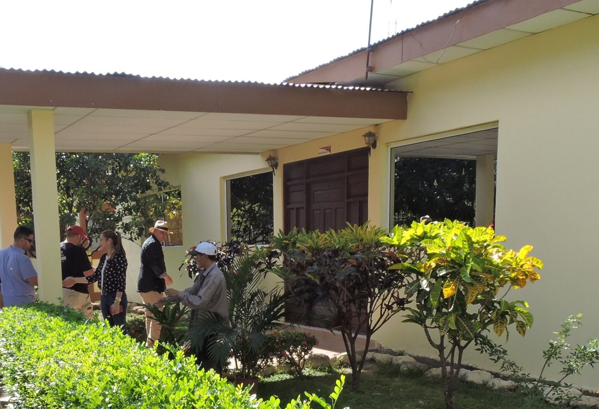
And then, his name comes to be inscribed on the signboards. A commissioned blender normally never appears in public. But in his case it was different. H. Upmann by AJ Fernandez, Montecristo Crafted by AJ Fernandez (the sleeve bears “CRAFTED BY AJ FERNANDEZ” in large letters, and his name also appears in the ring text on the band), Romeo y Julieta Crafted by AJ Fernandez, Monte by Montecristo AJ Fernandez, Ramón Allones by AJ Fernandez —. In successor works, too, with H. Upmann Nicaragua Heritage by AJ Fernandez and even K by Karen Berger 25 Aniversario by AJ Fernandez, an individual’s name becomes part of the product name. “Inscribing your own name on someone else’s signboard” is not a metaphor; it is a fact on the band.
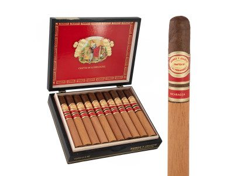
When you lay the structure out in a list, a scene unfolds that makes you tremble.
In the United States, the trademarks of Cuban brands are held by the exile side and by American companies, and cigars bearing those names are rolled in Nicaragua by a Cuban-born man. Montecristo, Romeo y Julieta, H. Upmann, Trinidad, Gispert (the foregoing are of the Altadis line), Hoyo, Punch, Ramón Allones (the foregoing are of the General line) — eight prestigious signboards pass through the factory of a single guajiro (country man).
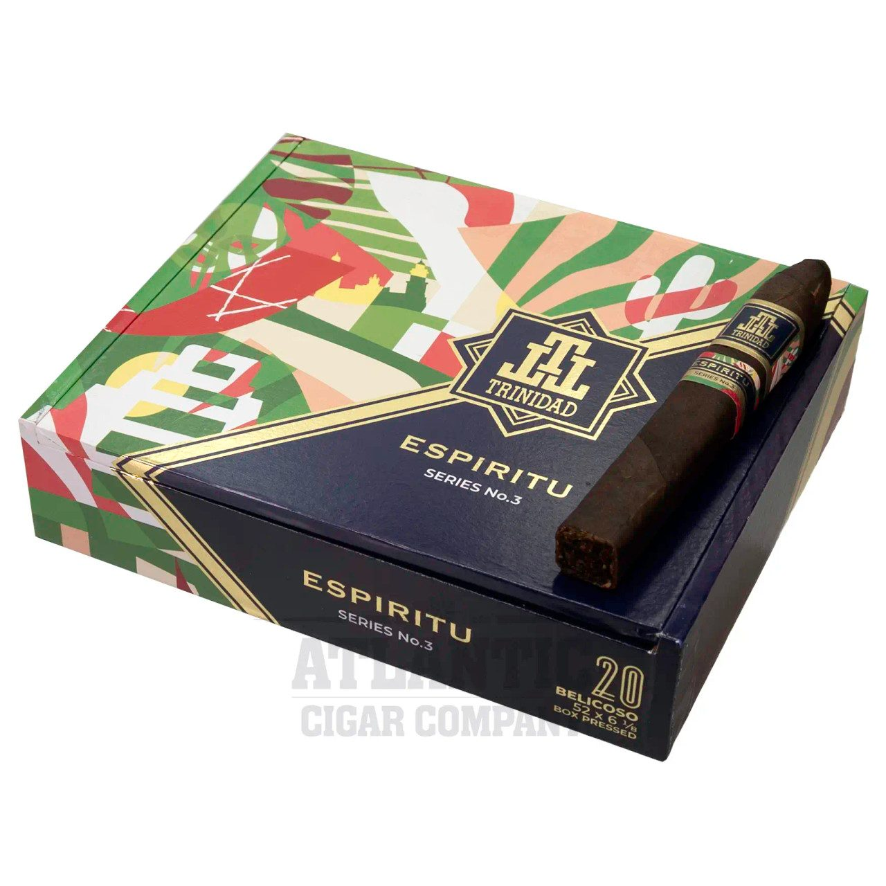
| Brand | Owner | Blend | Production | Distribution |
|---|---|---|---|---|
| Aging Room Quattro Nicaragua | Rafael Nodal (Boutique Blends) | Nodal × AJ | Estelí main factory | Boutique Blends / Altadis in partnership |
| Montecristo 1935 Anniversary Nicaragua | Altadis U.S.A. | Nodal × AJ | San Lotano factory (Ocotal) | Altadis U.S.A. |
| Montecristo Crafted by AJ Fernandez | Altadis U.S.A. | AJ × Grupo de Maestros | Estelí main factory | Santa Clara Cigars (JR) |
| Montecristo Nicaragua Series | Altadis U.S.A. | Nodal × AJ | Estelí main factory | Altadis U.S.A. |
| H. Upmann by AJ Fernandez | Altadis U.S.A. | AJ | Estelí main factory | Altadis U.S.A. |
| Romeo y Julieta Crafted by AJ Fernandez | Altadis U.S.A. | AJ | Estelí main factory | Santa Clara Cigars (JR) |
| Romeo San Andrés | Altadis U.S.A. | AJ | Estelí main factory | Altadis U.S.A. |
| Romeo y Julieta Reserva Real Nicaragua | Altadis U.S.A. | AJ × Nodal | Estelí main factory | Altadis U.S.A. |
| Trinidad Espiritu | Altadis U.S.A. | AJ × Nodal | Estelí main factory | Altadis U.S.A. |
| Gispert Intenso | Altadis U.S.A. | AJ | Estelí main factory | Altadis U.S.A. |
| Hoyo La Amistad | General Cigar | AJ | Estelí main factory | General Cigar |
| Punch Diablo | General Cigar | AJ | Estelí main factory | General Cigar |
| Diesel / Diesel Whiskey Row | STG | AJ (Whiskey Row conceived by J. Andrews) | Estelí main factory | Forged Cigar Co. |
| Foundry Time Flies | General Cigar | AJ involved | Estelí main factory | General Cigar |
| Ramón Allones by AJ Fernandez | General Cigar (trademark) | AJ | Estelí main factory | AJ Fernandez Cigars (exclusive distribution) |
| The Tabernacle (Foundation) | Nicholas Melillo | Nicholas Melillo | Estelí main factory | Foundation Cigar Co. |
| Southern Draw all lines | Robert & Sharon Holt | Robert Holt (some co-developed with AJ) | Estelí main factory | Southern Draw Cigars |
This is how to read this table. In the “Owner” column, AJ’s name does not appear even once. In the “Blend” and “Production” columns, there is almost no name but his. And there is just one brand for which his name appears in the “Distribution” column. This asymmetry is precisely what the title “Other People’s Signboards” means.
◆ Chapter 5 — A Name of His Own: Father and Son, Two Homelands
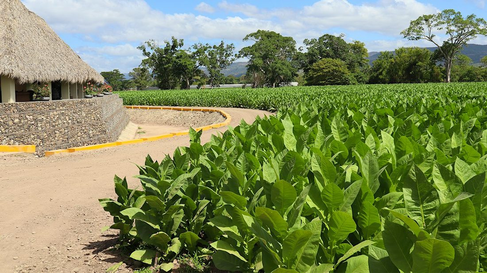
San Lotano (2010) — The origin of his own brand was a return to his grandfather. Before the revolution, in San Luis, his grandfather Andrés had made this brand, and the grandson revived it in Nicaragua (the story that the “o” in the name was a government office's mistake is in the Side Story in Chapter 2). The San Lotano Oval of 2011 drew attention for its outlandish oval-pressed shape, and its Corona earned a CA score of 91 and No. 25 in the Top 25 in 2012. It was his own brand's first entry in the Top 25. It was the first step from “the man who makes other people's cigars” to “the man with cigars of his own.”
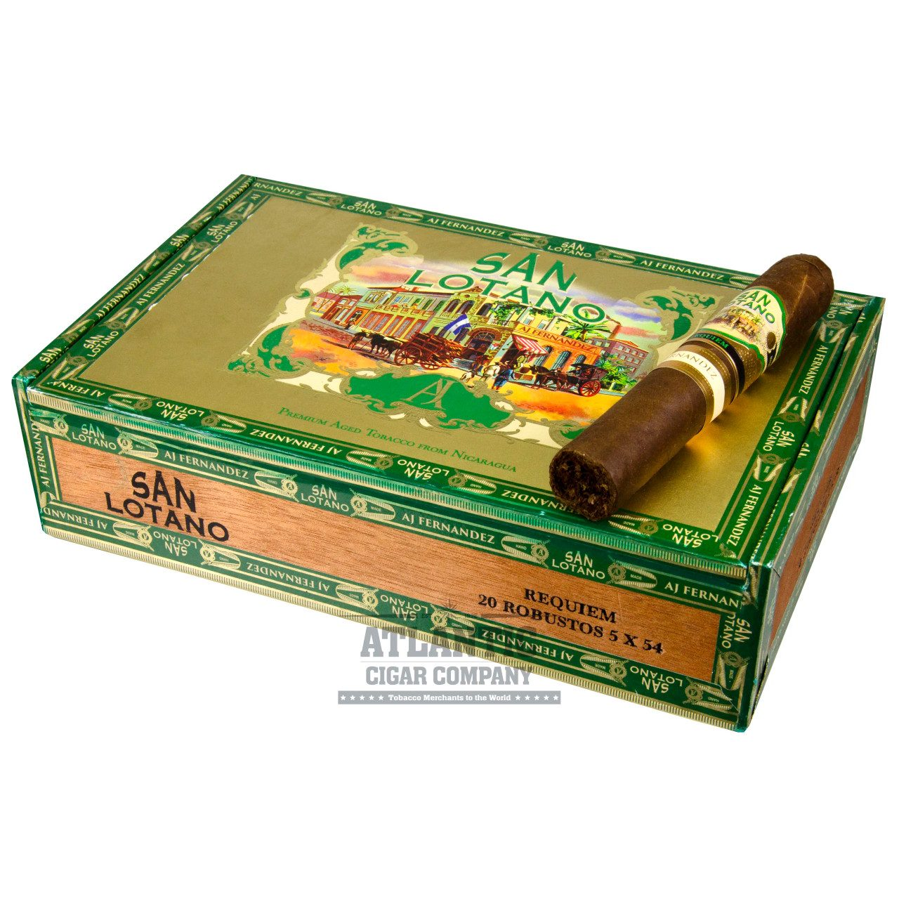
In the summer of 2010, in the launch statement for that San Lotano, AJ declared: “My company is dedicated to the memory of my grandfather, and to the late Alejandro Robaina, who was my master and my friend.” Robaina had died on April 17 of that same year. It was just a few months before the launch. In the same statement, he also touched on what he had been taught. “Above all, what I learned was patience in handling premium tobacco, and the importance of methods that have been handed down over time.” As we saw in the verification box in Chapter 1, no concrete picture of a “formal disciple” remains in the sources. And yet the fact that, on the launch of his own brand, he inscribed his master's name in the dedication remains in his own words. The first step of his own brand was, at the same time as a return to his grandfather, also a memorial to his master.
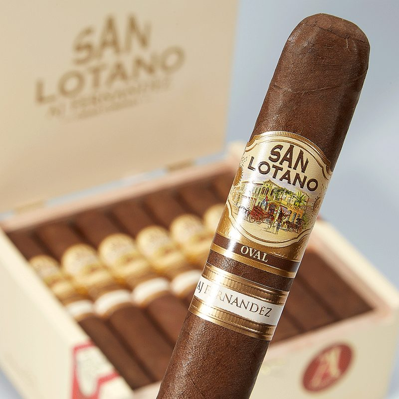
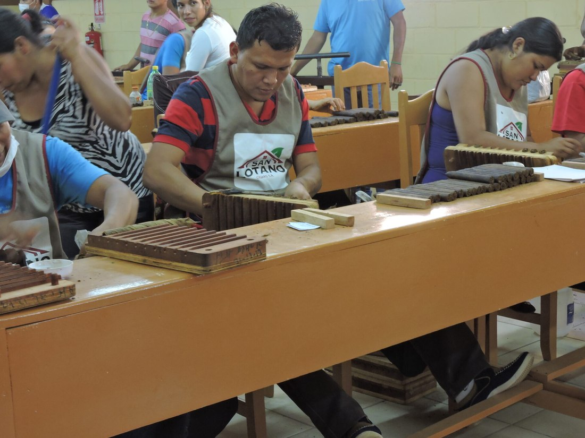
Pinolero (2012) — “Pinolero” is a colloquial term for Nicaraguans. Whereas San Lotano had been an homage to Cuba (the homeland where he was born), this one was positioned as an ode to his new homeland, Nicaragua. It had a Nicaraguan sun-grown wrapper and a blend including “the Fernandez family's secret filler,” and a Maduro version was also added in 2013. That the story of his own lines is made from a round trip between “two homelands” was already visible in these first two works.
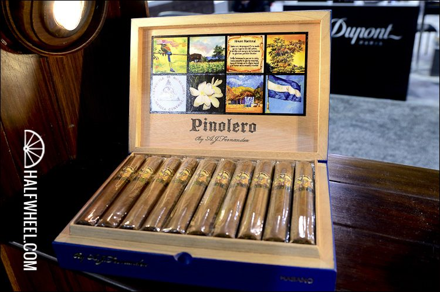
New World (2014) — The core of the father-and-son story. His father, Ismael Fernandez, had ended his 17 years at Plasencia and retired, and he joined AJ's company. New World was the first cigar father and son blended together. The name is an homage to the “discovery” of tobacco through Columbus's expedition in 1492. It was a Nicaraguan puro in a box press, and its price of about $6 at the time also became a talking point. Note that the “No. 1 of the Year” for which the original Gobernador was selected was chosen not by Cigar Aficionado but by Cigar Journal. It tends to be confused online, so we will set the record straight here. Later offshoots did enter CA's Top 25. The Toro of Puro Especial, which used only Estelí leaf aged for three to five years, scored 93 points (2017, No. 12), and the Robusto of Dorado, centred on leaf from the Dorado farm in Estelí, scored 94 points (2022, No. 14) — this is, at present, the “highest score for his own lines.”
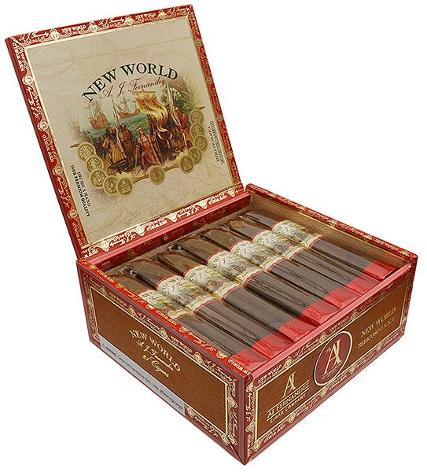
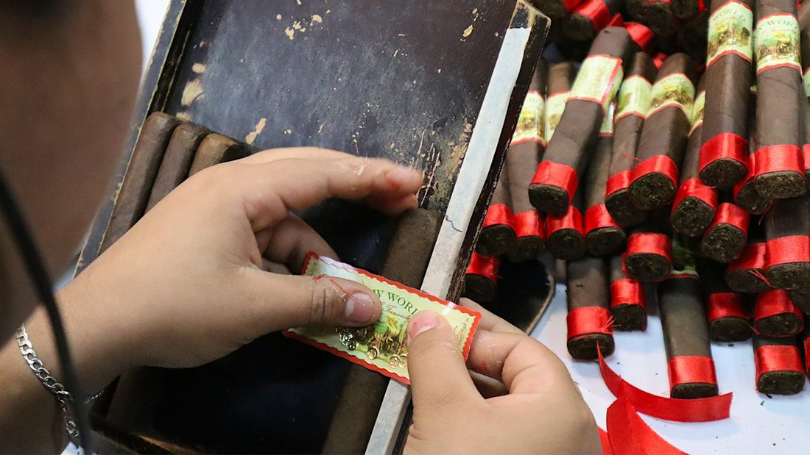
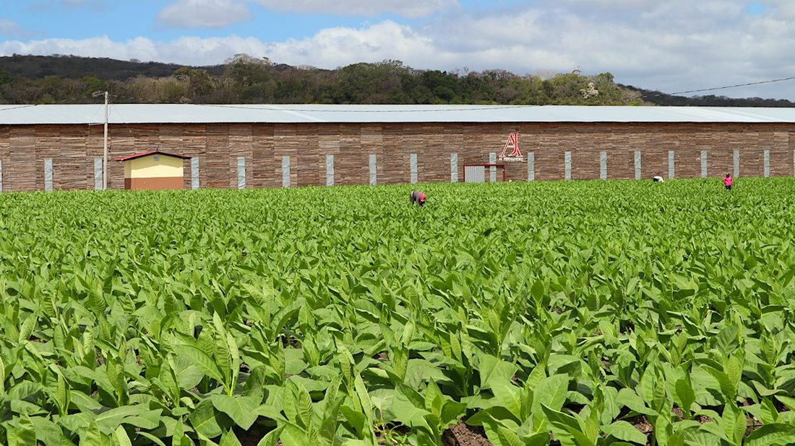
Enclave (2015) — CA's tasting notes write it plainly: “Enclave is a brand Ismael created.” The second father-and-son project, following New World, is in substance the father's work. Its theme is the “brotherhood and camaraderie” that surround a cigar. In a three-country blend combining an Ecuadorian Habano Rosado wrapper, a Cameroon binder — a first for AJ — and Nicaraguan filler, its Churchill earned a CA score of 92 (2016, No. 20). The Churchill of the 2017 Broadleaf version also reached 92 points (2019, No. 19). These were scores won not by power, but by finesse.
The father and son who run the factory together apparently sometimes disagree. Their way of resolving it is bold. “I make a blend, and my father makes one too. We hand them out to everyone at the factory and see which one is preferred” (AJ, Cigar Aficionado). Cigar Aficionado described this father and son as the industry's “unsung father-and-son team.” The father's 17 years of service at Plasencia, the son's empire, and now “duelling” under the same roof. If the fourth feature, My Father, was “a family bearing the father's name,” this is “a house that competes with the father.” It is another point of arrival for the father and son who left Cuba.
Last Call (2016) — Originally, it was a private blend that was never to leave the house. It was the “last one” served to guests invited to his home in Estelí during the fourth quarter of an NFL game — at the end of the night. It was so well received that it was commercialised, and given a name meaning “the last order before a bar closes.” It is a playful line, overlapping with CA's assessment that AJ may be the most enthusiastic American football fan in Nicaragua. Incidentally, it is also said that his only time to unwind is that Monday Night Football time.
Bellas Artes (2016) — The name derives from the National Museum of Fine Arts in Havana, and it is said to be a declaration of “the art of cigar making.” Its technical highlight is the house-developed hybrid wrapper, “Rojita.” It is a leaf created by crossing three varieties: Connecticut 8212, Corojo '99 and Habano 2000. The Maduro version of 2018 wore a Brazilian Mata Fina wrapper, and retail materials report a CA score of 90 (some retailers also show 91 points, and as the figures vary, we will keep it at 90 points here).
About the hybrid leaf Rojita of Bellas Artes, the personal blog Good Oil positions it as “the first cigar to showcase the tobacco technique learned from Robaina.” — However, this is a rumour-level story, from a single source that presents no evidence. As we saw in the verification in Chapter 1, given that the concrete picture of the master-disciple relationship with Robaina itself has not been left in the sources, no more can be said about this anecdote than that “there are people who tell it that way.” And yet the desire to read the shadow of his hometown master into his experimental work does seem to be there, both on the side of cigar fans and on the side of the maker's legend.
Días de Gloria (2019, formally released) — “Days of Glory.” Here, too, let us set one piece of lore straight. This line is not a “revival” of an actual pre-revolution brand. The name is a new one, and it is an homage to the glory days of pre-revolutionary Cuba and to the cigars his father, Ismael Fernandez, smoked in his youth. It has an unusual history: it was soft-launched once in 2017, but AJ himself pulled it from the market, and it was formally relaunched in 2019. The blend is a Nicaraguan puro using only leaf from the four oldest farms AJ holds in Estelí (Los Cedros, La Providencia 1, La Lilia, La Soledad), aged for up to seven years. It is an attempt to recreate, in the single region of Estelí, the idea that “pre-revolutionary Cuban cigars were made from the leaf of a single region.” In 2024, an offshoot in a Brazilian Mata Fina version was also added.
La Gran Llave — “The Big Key.” It was originally a brand that industry figure Michael Argenti developed in partnership with AJ, and the AJ side is said to have acquired the brand in 2016. It is a box press with a Mexican San Andrés wrapper. As the display of CA's score is split among retailers, we will not give a figure here. We will leave it quietly as an example of the man who makes “other people's brands” buying out another person's brand and moving it onto his own shelf.
Laid out like this, his own lines are made of stories of family and land: “grandfather (San Lotano),” “father (Enclave, New World),” “homeland (Pinolero is an ode to Nicaragua)” and “memory (Días de Gloria).”
Even if they yield to his contract-made works on scores, in the richness of their stories his own lines are another protagonist of this feature. And Néstor Andrés Plasencia of Plasencia looks back on AJ in his early days as follows. “I didn't think he would succeed this much. In an era when more experienced people kept opening factories one after another and going under, he opened one, and succeeded.”
◆ Chapter 6 — Fire, Gratitude, and the 'Country Boy'
On March 31, 2025, a major fire broke out at the main factory in Estelí. The fire started in the packaging department, and a large quantity of packaged cigars was lost in the flames. Shipments to partner companies such as Altadis, General Cigar, and Foundation were also delayed. Fortunately, there were no casualties, and all of the roughly 1,500 people who were inside the factory at the time, including 70 children from the attached school, were able to evacuate. Immediately after the fire, AJ told local media, "I want to resume rolling within a month."
And in 2026, he announced a line. Its name is "Amar" — Spanish for "love." It is a new line imbued with gratitude to the people of Estelí who helped him after the fire. A man who had kept making other people's brands rolled his "thank you" under his own name. In that order, I feel, his character shows through.
Let me gather the record of awards here at the end. As an individual, he has won Cigar Coop's "Person of the Year" a record three times (2015, 2017, and 2025). As a factory, he won Cigar Coop's "Large Factory of the Year" in 2019 and 2025; the main factory won halfwheel's "Factory of the Year" in 2018, and the second factory, San Lotano, tied for that same award in 2024. There are not many makers who have taken the top spot both as individuals and for their factories.
And yet his catchphrase is "my opinion." Even when he makes a definitive statement about tobacco, he prefaces it with this. CA wrote: "He presumably doesn't want to sound arrogant. In an industry full of bluster and absolutism, he pays attention to the tone of his words." Asked "What is your special character trait?" he answers, "Humility! That is what made me who I am today." The secret to his success is "work, work, and more work." His motto is "discipline and passion."
The master's lineage also continues, in a changed form. Hirochi Robaina, the grandson chosen as Robaina's successor, inherited his grandfather's farm, while also launching his own brand in 2014 and beginning to make cigars in Estelí, Nicaragua. Leading its U.S. distribution is Spencer Drake, the former national sales manager for AJ Fernandez. Hirochi still keeps a small note that was delivered from his grandfather through his father. "Hiroshi, you should understand. You are my hope. Do not disappoint me. From your grandfather." When he is in doubt, he says, he consults the notebook in which he wrote down his grandfather's advice. It is a concrete form of the act of "teaching" passed down in the family. To state this clearly and avoid any misunderstanding, Hirochi's cigars are not made at AJ's factory, but at the La Corona factory in Estelí. People from San Luis meet again in Nicaragua. That, too, is a story of this land.
A man who reached the top with other people's brands, carved his own name into other people's brands, and in the end came to be entrusted with the brands themselves. His self-introduction is still a single phrase: "I am a guajiro (a country boy)." A man who, at night, remains in the fields after the workers have gone home and climbs onto a tractor. The man whom Cigar Journal wrote was worthy of the name "genius" is standing on the soil of the fields. Genius and country boy. That gap may be the greatest individuality of AJ Fernandez as a maker.
From among the brands introduced in this feature, we have gathered those that can be bought from confirmed shops that ship to Japan. Prices were confirmed directly on each product page on November 9, 2026 (converted at $1 = ¥158.2; yen figures are approximate). Shipping and taxes are charged separately.
Aging Room Quattro Nicaragua Maestro Torpedo 10-Pack (6×52)
$60.50 (approx. ¥9,570) / approx. ¥957 per cigar (56% off the $137.90 list price) ·matches its lowest recorded price, and that price is being maintained ·in stock (verified)
The very vitola that was CA's No. 1 of the Year (2019, 96 points), at under ¥1,000 per cigar. If you want to try the star of this feature first, this is the one. Atlantic Cigar product page ▶
New World Oscuro Navegante Robusto Box of 21 (5½×55)
$101.87 (approx. ¥16,120) / approx. ¥767 per cigar (42% off the $176.40 list price) ·in stock (verified)
In the most affordable class this time as an entry point to the father-and-son creation. A box of the same New World is $116.95 at Cigar Place, and Neptune's Gobernador Toro box of 21 is $148.95, so Atlantic is a head cheaper.
*The photo is a single of the Oscuro from the same line (Smokingpipes). Atlantic Cigar product page ▶
Montecristo Crafted by AJ Fernandez Toro 10-Pack
$59.99 (approx. ¥9,490) / approx. ¥949 per cigar (67% off the $182.70 list price) ·in stock (verified)
"Montecristo as interpreted by AJ," in 10 cigars. The product page was confirmed in the regular patrol on the morning of November 9, 2026.
Enclave Habano Toro Box of 20 (6×52)
$113.40 (approx. ¥17,940) / approx. ¥897 per cigar (list price $180.00) ·in stock (verified)
A work by his father, Ismael. Almost the same price as Cigar Place's box ($114.95), with Atlantic slightly cheaper.
*The photo is a single from the same line (retailer product page). Atlantic Cigar product page ▶
San Lotano Habano Toro Box of 20 (6×54)
$114.71 (approx. ¥18,150) / approx. ¥907 per cigar (list price $190.00) ·in stock (verified)
The revival line bearing his grandfather's name, by the box.
*The photo is the Oval from the same line (Cigar.com). Atlantic Cigar product page ▶
Hoyo La Amistad Toro Single (6×50)
$7.95 (approx. ¥1,260) / single ·list price $12.19 ·in stock (verified)
The box of 20 ($158.95) is on backorder (scheduled to ship November 14–16), so buying singles is the practical option. The gold lettering "AJ FERNANDEZ" on the sub-band is also a highlight. Neptune Cigar product page ▶
Días de Gloria Brazil Toro BP Box of 20 (6½×54)
$189.00 (approx. ¥29,900) / approx. ¥1,495 per cigar (37% off the $300.00 list price) ·matches its lowest recorded price ·in stock (verified)
The Brazilian mata fina version added in 2024.
*The photo is a box of the original Días de Gloria Gordo (Gotham Cigars). Atlantic Cigar product page ▶
#1 Cigar of the Year Sampler 10 Cigars
$74.99 (approx. ¥11,860) / approx. ¥1,186 per cigar (63% off the $204.93 list price) ·in stock (verified) (sale until November 12, U.S. Eastern Time)
A "No. 1 of the Year showdown" sampler: Aging Room Quattro Nicaragua Maestro ×5 (2019 No. 1, made by AJ) and Oliva Serie V Melanio Figurado ×5 (2014 No. 1).
*The photo is an open box of Quattro Nicaragua, which makes up half the contents. Cigar Place product page ▶
Aging Room Quattro Nicaragua Concerto Impromptu Box of 10 (6×52)
$153.75 (approx. ¥24,320) / approx. ¥2,432 per cigar (list price $170.80) ·flat, at the same price as the previous recorded price ·in stock (verified)
The third blend of Quattro Nicaragua.
*The photo is an open box of the main Quattro Nicaragua line (Tobacconist of Greenwich). Neptune Cigar product page ▶
Bellas Artes Toro Single (6×54)
$9.45 (approx. ¥1,495) / single ·list price $10.50 ·in stock (verified)
The experimental work with the hybrid wrapper "Rojita," available from a single cigar.
*The photo is a box of the Maduro version of the same line (Cigars.com). Smokingpipes product page ▶